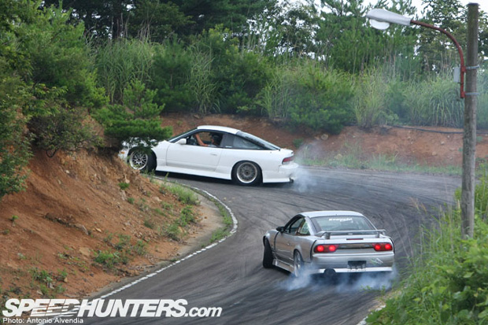

Drifting é levar seu carro além dos limites. Depende da técnica de direção para fazer o carro deslizar de lado e manter isso. Você tem que equilibrar a velocidade e o ângulo do drift unindo movimentos. Para ser o melhor você tem que aprender a unir alta velocidade com ângulo do drift simultaneamente. Aprenda a unir Velocidade, Ângulo, Inércia, crie um traçado imaginário.
Existem dois passos a serem seguidos para qualquer drift, então preste atenção.
O primeiro passo é iniciar o drift. Isto significa deixar o carro de lado. Há muitas maneiras de iniciar um drift, e aprender as técnicas para fazê-lo . O segundo passo é controlar o drift. Vamos ver o básico.
Drifting básico Se você quer fazer drift, tem que entender como se fazer uma curva. Ela acontece quando a traseira do carro gira na direção da curva. Há muitas maneiras de fazer isso acontecer, vou ensinar todas para vocês. Em carros tração traseira, você pode usar a aceleração para regular o ângulo do drift. Forçar a curva com o carro é uma grande parte do drift. Mas se você não conseguir controlar o carro vai acabar batendo.
Para evitar que o carro gire, você precisa virar na direção contraria. Vire as rodas dianteiras com calma na direção da curva e equilibre a aceleração para manter o drift. Treine este equilíbrio até se acostumar. Os carros são diferentes, então treine bastante naquele que você acha mais seu estilo. Para drifting, use carros com tração traseira..
Power over Vamos fazer anglo simples: drift por aceleração. É só usar a aceleração para deixar seu carro de lado. Para fazer isso, acelere bastante e vire totalmente para esquerda ou direita. Tente girar o carro em círculos no mesmo lugar, isso vai ajudá-lo a treinar. Quando você tiver dominado isso, conseguira fazer muito mais! Talvez você precise virar na direção contraria para evitar que o carro gire, principalmente depois, com mais potencia.
Side (também conhecido como drift de freio de mão)
Esse é fácil: puxe o freio de mão e vire a direção. Se você estiver numa reta, o carro ira girar rapidamente. Se você já estiver no drift, usando o freio de mão ira travar as rodas traseiras, aumentando o ângulo do drift. Lembre-se que o ângulo baseia-se no tempo que você segura o freio de mão. Se você segurar por muito tempo, pode acabar girando. Acertar um drift de frenagem lateral depende de travar as rodas traseiras. Travar e girar, entendeu? Tente misturar a frenagem lateral com aceleração, ou outras técnicas. Quando você estiver de lado, acelere e vire na direção contraria para manter o drift. Não é muito aconselhável pois o carro pode perder o controle rapidamente. Às vezes o que é fácil não ajuda.
Braking Você já entendeu que o drifting depende de tirar o equilíbrio do carro. Esse drift faz exatamente isso, acaba com o equilíbrio do carro. Confira! Entre em alta velocidade. Agora solte o acelerador e freie! Segure um pouco e volte ao acelerador. Se você fizer certo, o carro vai rodar. Pisando no freio faz o peso do carro mudar para a dianteira abruptamente. Isso faz a traseira perder tração e começar a girar.
Side (também conhecido como drift de freio de mão)
Esse é fácil: puxe o freio de mão e vire a direção. Se você estiver numa reta, o carro ira girar rapidamente. Se você já estiver no drift, usando o freio de mão ira travar as rodas traseiras, aumentando o ângulo do drift. Lembre-se que o ângulo baseia-se no tempo que você segura o freio de mão. Se você segurar por muito tempo, pode acabar girando. Acertar um drift de frenagem lateral depende de travar as rodas traseiras. Travar e girar, entendeu? Tente misturar a frenagem lateral com aceleração, ou outras técnicas. Quando você estiver de lado, acelere e vire na direção contraria para manter o drift. Não é muito aconselhável pois o carro pode perder o controle rapidamente. Às vezes o que é fácil não ajuda.
Braking
Você já entendeu que o drifting depende de tirar o equilíbrio do carro. Esse drift faz exatamente isso, acaba com o equilíbrio do carro. Confira! Entre em alta velocidade. Agora solte o acelerador e freie! Segure um pouco e volte ao acelerador. Se você fizer certo, o carro vai rodar. Pisando no freio faz o peso do carro mudar para a dianteira abruptamente. Isso faz a traseira perder tração e começar a girar.

Drift por redução de marcha:
A redução de marcha pode ser feita na corrida de GRIP, para começar um drift ou durante um drift para mantê-lo. Durante a curva, rapidamente reduza a marcha, aumenta a rotação do motor. A força extra ajuda as rodas traseiras a girarem. O carro ira rodar imediatamente. Garanta que o acelerador esteja pressionado quando for reduzir a marcha, ou não vai funcionar. Quando você fizer corretamente, o carro irá (pular), então vire na direção contraria ou você vai rodar durante a curva.
Acel off
É exatamente o que parece, para essa técnica , você precisa soltar o acelerador para fazer o carro rodar. Entre em uma curva mais rápido do que deveria. Garanta que o acelerador esteja pressionado. Quando estiver pronto para virar, solte o acelerador, nesse momento o carro deve girar com a suspensão traseira ficando mais leve (a transferência de peso ocorre como no drift por frenagem, só que mais sutil). Vire na direção contraria e aproveite. Você pode unir essa técnica com outras, como a de redução de marcha para aumentar a distancia do drift ou o ângulo. Use isso para grandes driftS e para acertar o ângulo.
Furikai (também conhecido como drift pendulo, chicote escandinavo, ou "scandinavian flick") Furikai é uma técnica usada comummente em corridas de rally. Consiste em entrar na curva por dentro ao invés da trazada comum, onde o carro é dirigido pelo exterior da curva. No momento de entrar na curva, o carro há de ser virado para fora, e logo abruptamente para dentro. Fazendo isso, consegue-se alterar a distribução de peso do veículo para o mesmo lado do exterior da curva, e, pelo giro repentino, provoca-se a perda de tracção no eixo traseiro. Uma vantagem desta manobra é a relativa facilidade para recuperar o controle do carro simplesmente soltando o acelerador.
Manji Técnica igual ao Feint, mas feita em retas. Com a velocidade certa, se o veículo vira-se para um lado, e solta-se o acelerador (isso fará a traseira rodar rapidamente), a distribução do peso é alterada, ao virar para o outro lado pisando no acelerador simultaneamente, a perda de tracção criada pode ser mantida virando para a direcção contrária mais uma vez, ja que uma vez a inercia é suficiente para criar a perda de tracção, é possível fazer drifts em direcções opostas sequencialmente.
Dirt drop Isto é feito deixando sair os pneus traseiros fora da pista (na sujeira) para manter ou ganhar o ângulo de drift sem poder ou velocidade perdedora e para ajustar-se para a curva seguinte. Somente permissível nas estrada sem barreiras e alinhadas com sujeira ou outros materiais que posam perder a tração. isto é feito geralmente em rallying de WRC.
Clutch kick Kicking, pise rapidamente na embreagem dentro da curva sem tirar o pé do acelerador, à embreagem empura para dentro ou para fora, use esta técnica para ajustar o ângulo do drift, para um ajuste muito rapido.
Changing side swing Esta técnica é usada extensivamente na competição D1 japonesa e é muito similar à drift inércia (feint). É feita frequentemente no primeiro canto do drift da entrada, que é frequentemente uma volta dobro longa do apex imediatamente antes de um muito rápido straight-way. Se straight-way antes que o apex dobro é de uma orientação em declive, o condutor se mantiver dirigir no lado da trilha que é a mais closetest ao canto. Então com sincronismo correto na mente, o condutor muda abruptamente o carro no outro lado. Este movimento tem o momentum do carro a ser alterado fazendo com que as rodas traseiras percam a tração. O carro está em uma direita do movimento do drift agora. O drift é carregada então sobre o canto e através dela.
Choku dori Isto é usado principalmente depois de viradas longas, retardar para baixo o carro e executar drift POR REDUÇÃO DE MARCHA. O carro está jogado em um feint e balançado para trás a outra maneira em velocidades muito elevadas, quando o condutor usar o BRAKING manter a linha dos carros e estender à tração.
Kansei Essa técnica é utilizada em curvas de alta-velocidade, se executada perfeitamente não é utilizado o freio. Na entrada da curva retira-se o pé do acelerador (accel-off) transferindo o peso para frente e provocando a perda de tração nas rodas de trás.
Dynamic drift Esta técnica é similar ao Choku Dori. Emprega todos os formulários das técnicas acima - e não restringido a somente uma - nas combinações para realizar o movimento desejado da tração. Controle do drift (ドリフト, dorifuto?) durante a curva Para isso podem ser usadas todas as ferramentas disponíveis ao piloto, sendo: embreagem, direção, freio, freio de mão e acelerador. Se estiver fazendo drift sozinho (sem haver batalhas ou duelos de drift), o ideal é usar o freio de mão o menos possível, mas apenas se você já for experiente. E, para batalhas ou duelos de drift o uso do freio de mão é mais comum.